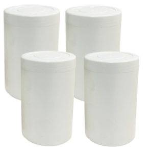

Las pastillas de cloro para piscinas son la forma más simple, segura y económica de mantener el agua desinfectada todo el verano. Te explicamos cómo funcionan, cómo se usan correctamente y cuáles son las que más rinden por su precio.
Si recién compraste tu piscina o llevas años usando cloro líquido y quieres simplificar la rutina, las pastillas (también llamadas tabletas) son probablemente lo que estás buscando. Una sola pastilla puede durar entre 5 y 7 días dosificando cloro de manera continua, sin que tengas que estar pendiente todos los días.
¿Qué son las pastillas de cloro para piscinas?
Las pastillas de cloro son tabletas sólidas comprimidas de tricloroisocianurato de sodio (TCCA), un compuesto que al entrar en contacto con el agua se disuelve lentamente liberando cloro libre, el agente desinfectante real.
Vienen en dos formatos:
- Pastillas de 200 g: las más comunes en piscinas residenciales (hasta 50 m³).
- Pastillas de 500 g: para piscinas grandes o uso comunitario.
¿Por qué funcionan tan bien?
Las pastillas resuelven 4 problemas que el cloro líquido o granulado no resuelven al mismo tiempo:
- Disolución lenta: en lugar de soltar todo el cloro de golpe, lo entregan durante días.
- Multifunción 3 en 1: las mejores incluyen cloro, algicida y clarificador en la misma tableta.
- Estabilizador integrado: el ácido cianúrico que contienen protege el cloro de la radiación solar.
- Sin riesgo de derrames: son sólidas, fáciles de manipular y almacenar.
¿Cómo usar las pastillas de cloro correctamente?
El error más común es lanzarlas directamente al agua. Eso mancha el liner permanentemente. La forma correcta:
Opción 1: dispensador flotante
Es la opción más usada. Pones 1 o 2 pastillas en el flotador, lo dejas en la piscina y la pastilla se disuelve por contacto con el agua. Ajustas la velocidad de disolución abriendo o cerrando los orificios.
Opción 2: skimmer
Si tu piscina tiene skimmer, puedes poner la pastilla ahí. Se disuelve rápido (mayor caudal de agua) y se distribuye mejor. Ojo: cuando apagues la bomba, retira la pastilla, porque el agua queda estancada y concentrada en el skimmer puede dañar la cañería.
Opción 3: clorinador en línea
Sistema profesional instalado en la cañería de retorno. Ideal para piscinas grandes o comunitarias. Permite regular la dosis con precisión y no requiere intervención.
Tabla de dosificación con pastillas de 200 g
Para piscinas residenciales con cloro libre objetivo de 1-3 ppm (si quieres el cálculo exacto para tus litros, usa la tabla de cloro para piscinas con calculadora):
- Piscina 10 m³: 1/2 pastilla cada 5-7 días
- Piscina 20 m³: 1 pastilla cada 5-7 días
- Piscina 30 m³: 1.5 pastillas cada 5-7 días
- Piscina 50 m³: 2-3 pastillas cada 5-7 días
- Piscina 100 m³: 5-6 pastillas o usar formato 500 g
En semanas de mucho calor (>30 °C), uso intensivo o tras lluvia, reduce el intervalo a cada 3-4 días.

Cloro en Tabletas Pack 4 Kilos
20 pastillas de 200 g multifunción 3 en 1. Te alcanza para 4-5 meses de mantención en piscina residencial.
Comprar Ahora¿Qué pastillas de cloro comprar?
No todas las pastillas son iguales. Al elegir, fíjate en estos 4 criterios:
- Concentración de cloro disponible: sobre 89 % es buena calidad.
- Triple acción (multifunción 3 en 1): incluyen algicida y clarificador, te ahorras 2 productos extra. Puedes verlas en nuestro catálogo de pastillas de cloro triple acción.
- Tiempo de disolución: entre 5 y 7 días en agua a temperatura ambiente.
- Formato del envase: packs herméticos resellables, mantienen las pastillas secas (la humedad las arruina).
"Una pastilla buena cuesta lo mismo que una mala, pero una mala dura 2 días y no incluye algicida. Termina costando el doble."
Errores comunes al usar pastillas de cloro
- Echarlas al agua sueltas. Mancha permanentemente el revestimiento.
- Mezclarlas con cloro granulado en el mismo dispensador. Puede generar gas tóxico.
- No medir cloro libre. Sin test kit no sabes si la pastilla está rindiendo o ya se acabó.
- Almacenarlas mal. Humedad o calor las degrada.
- No regular el pH. Con pH alto, el cloro de la pastilla pierde efectividad.
¿Cuánto duran las pastillas de cloro?
Si las guardas correctamente (envase cerrado, lugar seco y fresco), duran hasta 3 años. Una vez en el agua, una pastilla de 200 g dura entre 5 y 7 días en piscina residencial. Si necesitas cubrir toda la temporada, el pack de 5 kilos trae 25 pastillas al mejor precio por kilo.
Resumen
- Las pastillas de cloro son el formato más simple para uso residencial.
- Úsalas siempre con dispensador o en el skimmer, nunca sueltas.
- Prefiere las multifunción 3 en 1: te ahorras algicida y clarificador.
- 1 pastilla de 200 g por cada 20 m³ cada 5-7 días.
- Mide siempre cloro libre y pH para ajustar.
Si quieres probarlas, parte con un pack de cloro en tabletas y un test kit. Es la combinación más simple y rentable que existe para mantener piscinas residenciales.